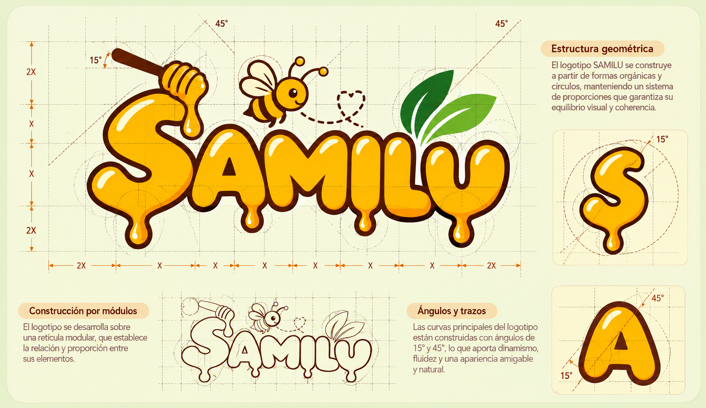
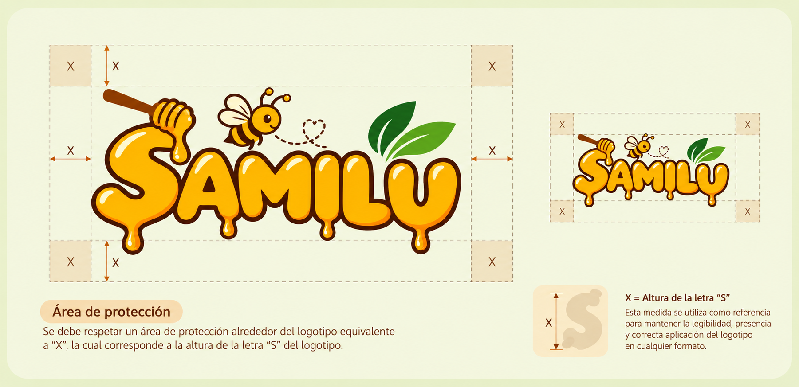
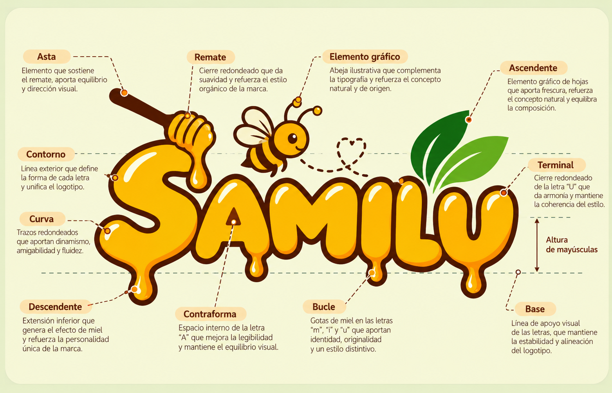
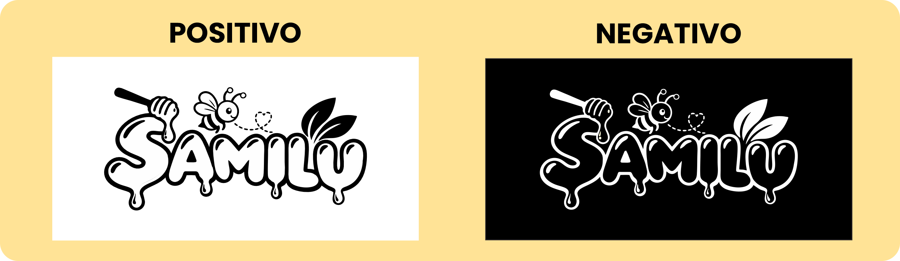
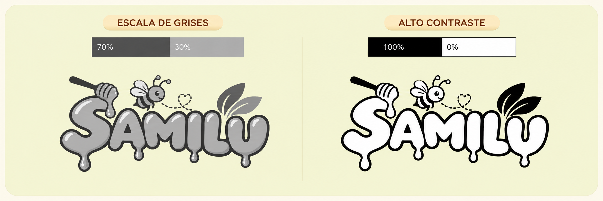
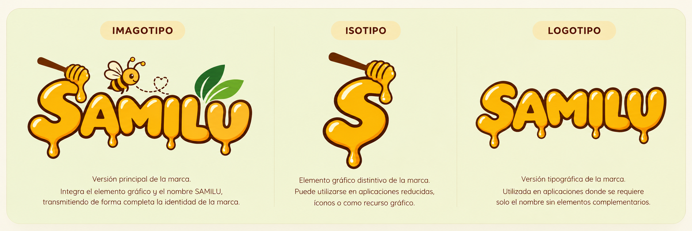
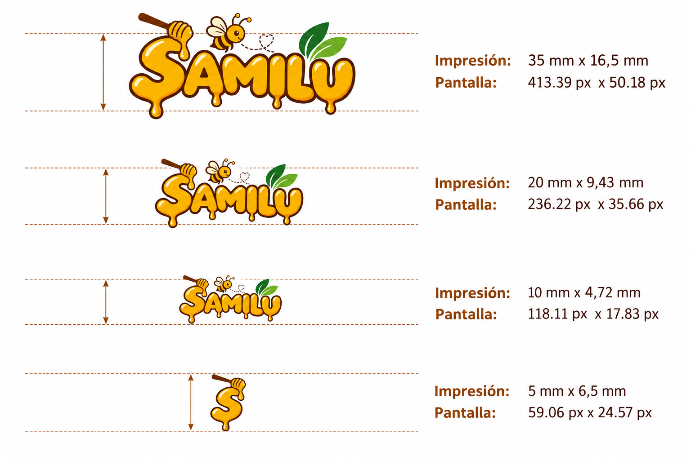

Nombre de marca
SAMILU constituye el elemento principal de identificación.

Este manual reúne los principales criterios para utilizar la identidad visual y verbal de SAMILU de manera consistente en sus diferentes soportes.
La identidad visual reúne los elementos gráficos con los que SAMILU se presenta ante el público: logotipo, colores, tipografía y recursos visuales.
Los elementos visuales deben mantenerse consistentes para facilitar la identificación de la marca.
Las diferentes aplicaciones deben conservar una misma dirección visual.
La combinación de miel, naturaleza y Selva Central mantiene una identidad cálida y cercana.
SAMILU utiliza un lenguaje cercano, amigable y sencillo, buscando transmitir confianza, calidad y el sabor natural de la Selva Central.
La propuesta seleccionada integra el nombre de SAMILU con elementos relacionados directamente con la miel, la naturaleza y la Selva Central.
La versión principal corresponde al logotipo a color, utilizado como representación principal de la marca.
VERSIÓN A COLOR
La composición del Imagotipo integra el nombre de SAMILU con elementos gráficos relacionados con la miel, la naturaleza y la Selva Central.

SAMILU constituye el elemento principal de identificación.
Abeja, cucharón, gotas y hojas construyen una relación visual con la actividad de la marca.
Todos los elementos buscan una composición equilibrada, sencilla y reconocible.
El área de protección evita que otros elementos interfieran visualmente con el logotipo.

Mantén una separación suficiente alrededor del logotipo para conservar su legibilidad y presencia.
La jerarquía tipográfica permite diferenciar el nombre de la marca de la información adicional, manteniendo una comunicación clara.
Sans serif · Redondeada · Expresiva
Es la tipografía utilizada para el nombre de marca “SAMILU”. Su apariencia llamativa, amigable y expresiva ayuda a construir una personalidad moderna, cercana, creativa y natural.
Para textos secundarios, información de productos, publicidad y otros materiales corporativos se utilizará una tipografía complementaria de fácil lectura.
La anatomía tipográfica ayuda a comprender cómo se construyen las formas de las letras y cómo se organiza visualmente una tipografía.

La imagen muestra las principales partes y características de la tipografía utilizada en la identidad de la marca.
La identidad de SAMILU utiliza una paleta formada por dorado, marrón, verde oscuro, verde claro y crema.
Las versiones positiva y negativa permiten adaptar el logotipo a diferentes fondos conservando su reconocimiento y legibilidad.

Las versiones monocromáticas permiten reproducir el identificador cuando la aplicación no admite la paleta cromática completa.

El identificador debe conservar sus características principales y reconocimiento en diferentes medios y situaciones de uso.

Las variaciones de tamaño deben evaluarse según el soporte para evitar pérdida de reconocimiento de los elementos principales.

Los fondos y elementos gráficos deben permitir que el logotipo conserve contraste, legibilidad y presencia visual.
El uso consistente de la identidad visual y verbal permite mantener una presencia reconocible en todos los puntos de contacto de SAMILU.